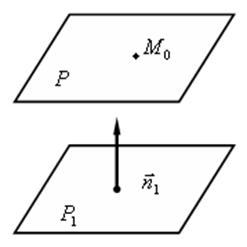
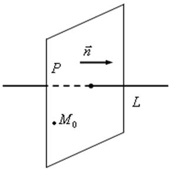
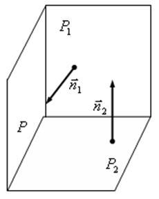

П 6.1.№1.
Составьте уравнение плоскости  ,
проходящей через точку
,
проходящей через точку  :
:
,
проходящей через точку :1. параллельно плоскости ;
2. перпендикулярно прямой  ;
;
;3. перпендикулярно двум плоскостям и
.
Решение:

1. Плоскость проходит через точку параллельно
плоскости , заданной уравнением . В качестве нормального вектора
искомой плоскости можно выбрать нормальный
вектор плоскости . Плоскость задана общим уравнением  , в котором коэффициенты
, в котором коэффициенты  ,
,  ,
,  являются компонентами нормального
вектора, значит, и уравнение плоскости может быть записано в виде уравнения
плоскости, проходящей через точку
являются компонентами нормального
вектора, значит, и уравнение плоскости может быть записано в виде уравнения
плоскости, проходящей через точку  с нормальным
вектором :
с нормальным
вектором :
можно выбрать нормальный
вектор плоскости . Плоскость задана общим уравнением , в котором коэффициенты , , являются компонентами нормального
вектора, значит, и уравнение плоскости может быть записано в виде уравнения
плоскости, проходящей через точку с нормальным
вектором :.
После приведения к виду общего уравнения плоскости это
уравнение принимает вид: .

2. Плоскость проходит через точку перпендикулярно
прямой :.
:.
В качестве нормального вектора искомой плоскости выбираем
направляющий вектор прямой , имеющий
компоненты из канонических уравнений данной
прямой .
, имеющий
компоненты из канонических уравнений данной
прямой . Уравнение плоскости, проходящей через точку с нормальным вектором , имеет вид:
.

3. Искомая плоскость проходит через точку и перпендикулярна двум плоскостям:
Нормальный вектор искомой плоскости должен быть
перпендикулярен нормальным векторам плоскостей и.
В качестве такого вектора можно выбрать их векторное произведение:
Уравнение искомой плоскости имеет вид:
Ответ:
1.
2.
3..